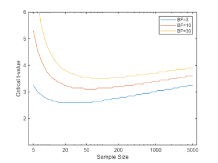
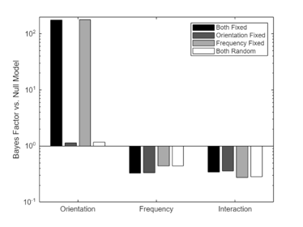
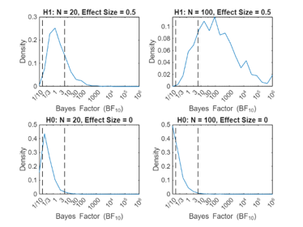
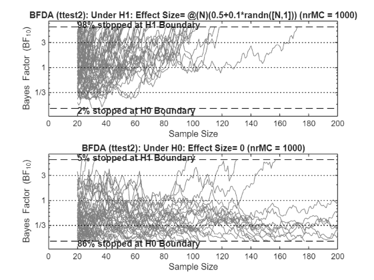
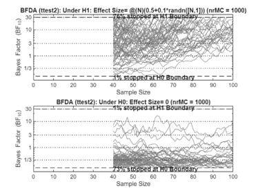

Getting Started with the bayesFactor Toolbox
Contents
Description
Bayesian statistical analysis can help to design experiments that lead to compelling evidence and to quantify the evidence in favor or against a hypothesis, based on a dataset.
This toolbox provides easy-to-use functions to replace (or complement) standard tools for experimental design (e.g. power analysis) and hypothesis testing (e.g. ttest, anova).
Authors & Sources
The code was written by Bart Krekelberg (bart@vision.rutgers.edu) with some code taken from Sam Schwarzkopf's code and with inspiration from the R package by Richard Morey.
The mathematical underpinning of these analyzes can be found in the following papers:
- Rouder, J. N., Morey, R. D., Speckman, P. L. & Province, J. M. Default Bayes factors for ANOVA designs. J. Math. Psychol. 56, 356–374 (2012).
- Kass, R. E. & Raftery, A. E. Bayes factors. J. Am. Stat. Soc. 90, 733–795 (1995).
- Morey, R. D. & Wagenmakers, E. J. Simple relation between Bayesian order-restricted and point-null hypothesis tests. Stat. Probab. Lett. 92, 121–124 (2014).
- Schoenbrodt, F. D. & Wagenmakers, E. J. Bayes factor design analysis: Planning for compelling evidence. Psychon. Bull. Rev. 1–15 (2017). doi:10.3758/s13423-017-1230-y
System Requirements
This toolbox depends on the Mathworks <https://www.mathworks.com/products/statistics.html Statistics and Machine Learning Toolbox >
Features
Currently the following statistical tests have been implemented
- One sample t-test (bf.ttest)
- Two sample t-test (bf.ttest2)
- N-Way Anova with fixed and random effects (bf.anova)
- Pearson Correlation (bf.corr)
- Binomial Test (bf.binom)
The |bf.designAnalysis |function is used to analyze experimental design (e.g. "power analysis").
Note how all user accessible functions in this toolbox are defined inside the 'bf' package. This avoids naming conflicts with the standard ttest, ttest2 , etc functions.
Function inside bf.internal are not meant to be called directly.
Installation
Place all files and folders in their own folder (e.g. bayesFactor) and then add that folder to your Matlab search path.
The installBayesFactor.m function willl do this for you.
Examples
These examples build on the examples used in the Statistics and Machine Learning Toolbox for traditional (frequentist) hypothesis testing and shows how they can be complemented with Bayesian analysis.
Single sample T-Test
load stockreturns
[bf10,p] = bf.ttest(stocks(:,3))
bf10 =
2.7158
p =
0.0106
The p-value of the traditional test shows that the stock return was significantly different from zero, but the Bayes Factor shows that the evidence is weak (BF10<3).
Paired T-Test
We are comparing student grades on two exams and want to know whether the grades changed from exam 1 to exam 2.
load examgrades
[bf10,p] = bf.ttest(grades(:,1),grades(:,2))
bf10 =
0.1014
p =
0.9805
The T-test tells us that the Null hypotheses (grades changed) cannot be rejected. The Bayes Factor is more informative, we can convert it to the Bayes Factor for the absence of an effect:
bf01 = 1/bf10
bf01 =
9.8621
Which means that there is strong evidence (BF>6) that there was *no change* in grades (evidence for absence).
ANOVA
Rouder et al 2012 show data for 10 subjects performing a visual detection task. The targets vary in orientation and spatial frequency. These data are stored in table (data) in rouder2012Data.
load rouder2012Data
Analyze full model (linear effects of frequency and orientation plus their interaction)
[bfFull,modelFull] = bf.anova(data,'rt~ori*freq');
The modelFull is a LinearMixedModel from the Matlab Statistics toolbox. We use it to show the traditional ANOVA table
modelFull.anova
ans =
ANOVA MARGINAL TESTS: DFMETHOD = 'RESIDUAL'
Term FStat DF1 DF2 pValue
'(Intercept)' 485.34 1 36 1.7406e-22
'ori' 6.2245 1 36 0.017324
'freq' 1.8469 1 36 0.1826
'ori:freq' 0.66837 1 36 0.419
The table shows a main effect of ori
The Bayes Factor shows that the Full model is better than the Null model (i.e. intercept only model)
bfFull
bfFull = 12.2025
To specifically look at the evidence for a main effect of orientation, we need to compare the Bayes Factor of the full model to a restricted model in which everything except the main effect of orientation is kept.
bfRestricted = bf.anova(data,'rt~freq +ori:freq'); % Keep main of freq and ori:freq interaction.
The evidence for the main effect is the ratio of the Bayes Factors.
bfMain = bfFull/bfRestricted
bfMain = 177.2155
The evidence is overwhelmingly in favor of a main effect of orientation.
Figures from Rouder et al. 2012
Much of the mathematical basis for this package is developed in the Rouder et al. paper. To test the package, I recreated some of the figures in their publication.
Figure 2 in Rouder et al compares critical T-values for a traditional t-test with a Bayes Factor analysis.
rouderFigure2;
Figure 4 shows Bayes Factor analysis for simulated data with different effect sizes.
rouderFigure4(100); % Use 1000 bootstrap sets .

Figure 5 illustrates the influence of fixed and random effects
rouderFigure5;
Bayes Factor Design Analysis - Figures from Schoenbrodt & Wagenmakers
This paper provides a tutorial treatment of Bayes Factor Design Analysis. Please see schoenbrodtFigures.m for details.
% Figure 3 in S&W analyzes a Fixed-N design for a T-test. schoenbrodtFigures(3,1000); % 10000 Monte Carlo sims
*************** N = 20 100 False Positives (%): 0.8 0.3 False Negatives (%): 1.4 0 True Positives (%) 22 83.5 True Negatives (%) 20.2 54.8 ************** Necessary sample size for 95% success under H1 is Inf False Positives (%): 0.6 0.4 0.4 0.3 0.3 0.2 0.5 0.4 0.6 0.4 0.6 0.2 0.4 False Negatives (%): 0.1 0 0 0 0 0 0 0 0 0 0 0.1 0 True negative (%): 53.6 55.3 59.7 62.6 61.4 63.5 61.9 61.9 62.7 63.4 61.6 61.2 63.3
Figure 4 in S&@ analyzes a Bayes sequential sampling design.
schoenbrodtFigures(4,1000); % 10000 Monte Carlo sims
False Positive Rate: 87% False Negative Rate: 1.3% Median Sample Size (H1): 35 Median Sample Size (H0): 42
Figure 5 refines the Sequential design analysis
schoenbrodtFigures(5,1000); % 10000 Monte Carlo sims
False Positive Rate: 70.4% False Negative Rate: 0.7% Median Sample Size (H1): 66 Median Sample Size (H0): 55